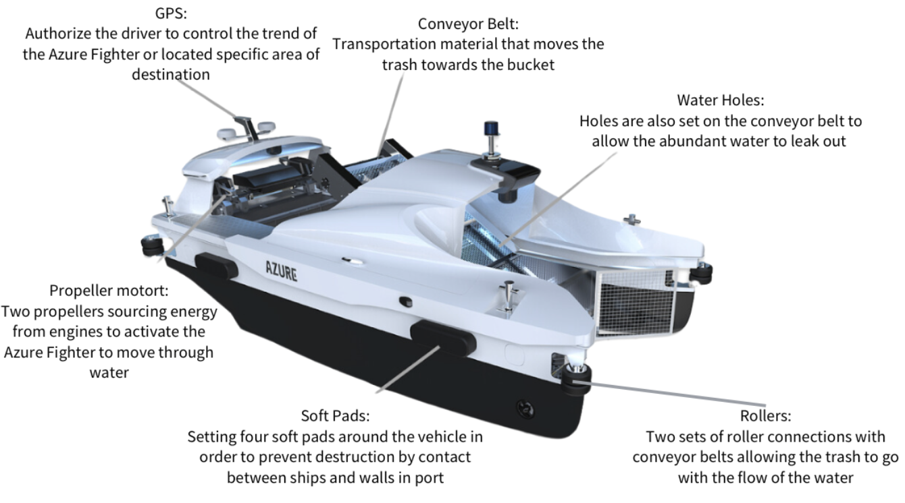
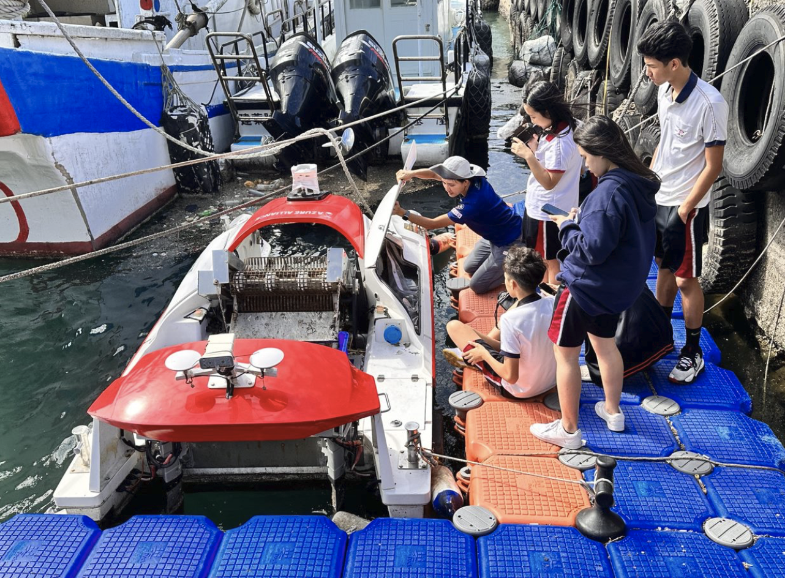

01 — OVERVIEW
International CyberFair
As part of the International CyberFair, I led the Technology R&D team in researching Azure Alliance and its marine waste-collection vessel, the Azure Fighter. Our team explored how engineering and technology could help address marine pollution and presented our findings through a public project website.

02 — ENGINEERING RESEARCH
Azure Fighter
We analyzed the Azure Fighter's major engineering systems, including GPS navigation, propulsion, rollers, conveyor-based waste collection, water drainage, and protective structures.

03 — MY CONTRIBUTIONS
Technology R&D
I led the Technology R&D team and helped research the vessel's technical design, including GPS navigation, propulsion, conveyor-based waste collection, and sustainability applications. I also contributed to developing the project website and presenting our technical findings.

04 — RESULT
Platinum Award
The project received the Platinum Award at the International CyberFair.